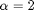

Epicycles for Galactic Orbits
Epicycles provide a simple way to study approximate solutions for the orbit of a test body in a gravitational potential. In ../../epicycles/html/epicycles.html the near-circular orbit of a test particle with epicyclic (low-eccentricity) perturbations was plotted in two frames, the guiding center and the frame of a distant observer. That was for an orbit around a point mass and would be the correct prescription for studying the lowest order movement of planets in our Solar System, where the Sun acts as a Newtonian point mass. We can ask what happens if we relax the assumption of the point mass to a more general gravitational potential.
Near-circular orbits in a spherical potential follow and with and , where and . and are the orbital and epicyclic frequencies evaluated at . In the point mass case seen in the epicycles script linked above, these are equal. If they are unequal, as we will now see, orbits do not necessarily close and more complex shapes can be seen. If the mass density that produces the gravitational potential varies as , one can show that .
We now consider two specific cases that are highly relevant to real galaxies such as our own, namely  for a dark-matter dominated potential, and for a bulge potential.
Contents
Plots of Orbits
% Initial parameter values R0 = 1.; % We'll use solar units, so mass is in solar masses, distance is G = 1.; % in AU, G=1, and time is in years Mr = 1.; A = 0.2*R0; omega = @(G,Mr,r) sqrt( G*Mr./(r.^3) ); kappa = @(omega,alpha) sqrt(4-alpha)*omega; f=1; % figure number for alph = [0.0,2.0], % I have a for loop which cycles through the two % values of alpha, 0 and 2 for the bulge potential % and dark matter cases. omega0 = omega(G,Mr,R0); kappa0 = kappa(omega0,alph); time = linspace(0,4*2*pi/omega0,200); %values of time for our orbits % Now I specify the background circular orbit x0 = R0*cos(omega0*time); y0 = R0*sin(omega0*time); % And then specify the epicyclic perturbation: x1 = A*sin(kappa0*time); y1 = 2.0 *(omega0/kappa0)*A*cos(kappa0*time); % Our first orbit to plot has x and y as: x = R0 + x1; y = y1; figure(f); clf; f=f+1; plot(x,y) axis([R0-3*A R0+3*A -3*A 3*A]) axis square title('Epicyclic orbit as seen in frame of Guiding Center') xlabel('x') ylabel('y') % Now we consider the full epicyclic orbit with the circular orbit % background: % First we consider the position of the perturbed orbti in circular coords: R = R0 + x1; phi = omega0*time + y1./R0; % Then transform this into cartesian coordinates for plotting: x = R.*cos(phi); y = R.*sin(phi); figure(f); clf; f=f+1; hold on plot(x0,y0,'--r') %First we plot the background circular orbit in red dotted line plot(x,y,'b') % Then plot the perturbed orbit axis([-1.5*R0 1.5*R0 -1.5*R0 1.5*R0]) axis square title('Epicyclic orbit with background circ. orbit') xlabel('x') ylabel('y') end